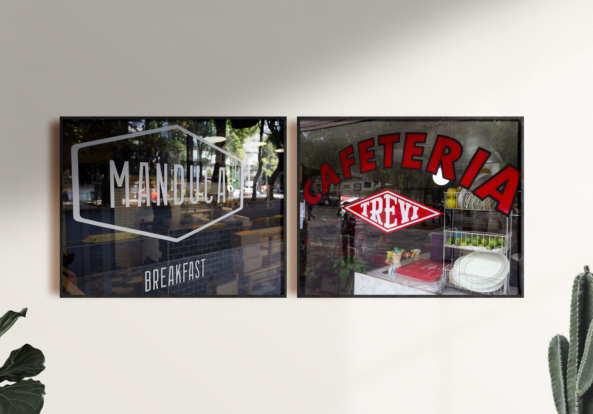
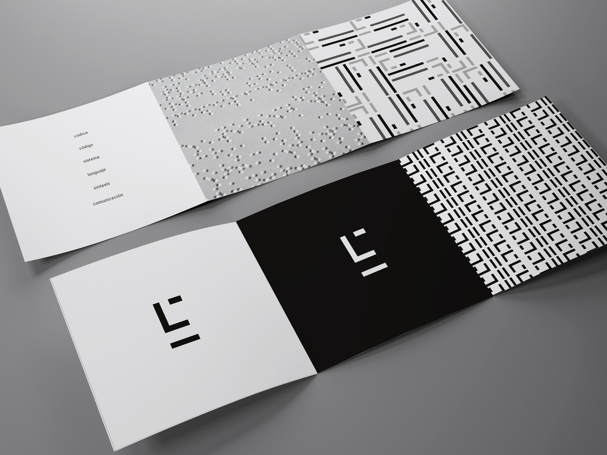
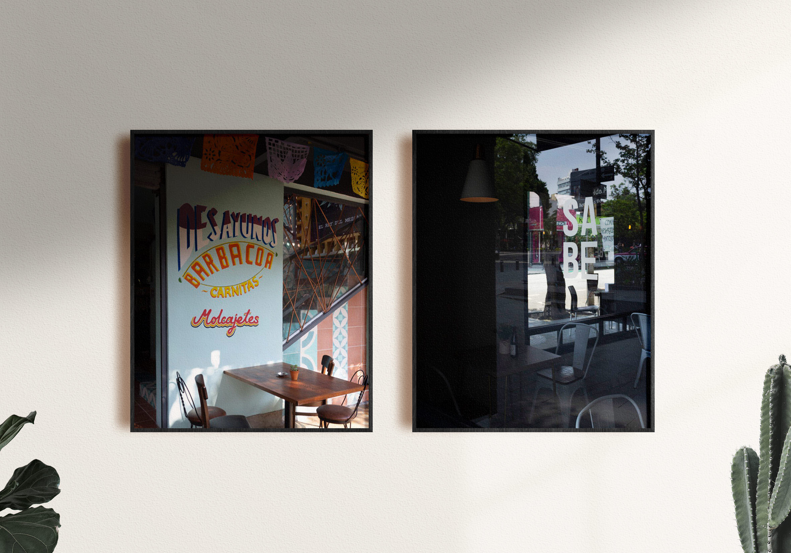
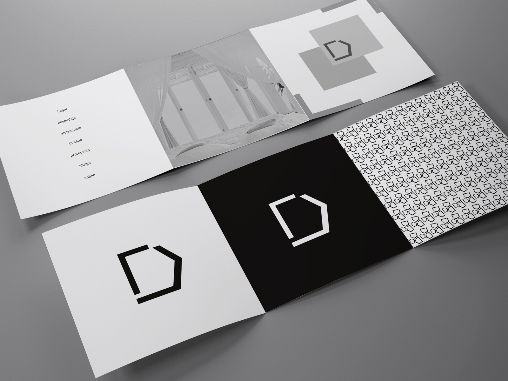
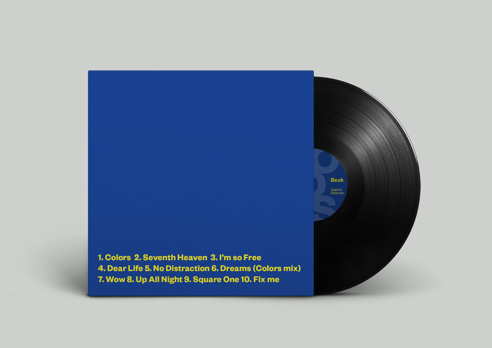

Lucía Poo Álvarez
Diseñadora gráfica y estudiante de la licenciatura de Comunicación Visual en CENTRO. Su pasión por el diseño, le ha dado paso a grandes oportunidades, entre ellas, asistir a un curso de verano en el Instituto Europeo de Diseño en Barcelona y fundar su propio blog. Por medio de su trabajo, Lucía busca la construcción de marcas y proyectos visuales que ayuden a resolver problemas cotidianos.
A través de diversos procesos creativos, a logrado desafiar las necesidades de comunicación de sus clientes mediante el diseño de elementos atractivos, estéticos y funcionales.





Lucia Poo


